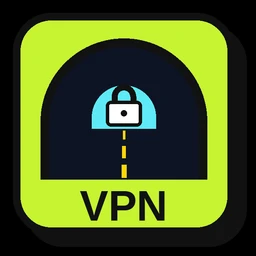

1
Ton appareil chiffre tout
Ton appareil › Appli VPN › Chiffrement
L'appli VPN (protocole WireGuard ou OpenVPN le plus souvent) chiffre tout ce qui sort de ton téléphone ou de ton PC.

Un VPN fait passer ta connexion dans un tunnel chiffré jusqu'à un serveur. Il cache le trajet à ton opérateur et ton adresse IP aux sites, mais il ne te rend pas anonyme, et il voit lui-même tout ce qui passe.

Un VPN (réseau privé virtuel) relie ton appareil à un serveur par un tunnel chiffré. Tout ton trafic passe par ce serveur avant d'aller sur Internet. Né en 1996 chez Microsoft (protocole PPTP de Gurdeep Singh-Pall) pour travailler depuis chez soi, il sert aujourd'hui surtout à protéger sa connexion.
Ton opérateur (ou le gérant du Wi-Fi) voit que tu utilises un VPN, mais plus les sites où tu vas.
ProtégéLes sites voient l'adresse du serveur VPN, pas la tienne : ils ne devinent plus ta ville ni ton opérateur.
ProtégéConnecté à ton compte (Google, Facebook…), avec tes cookies et ton navigateur habituel, tu restes reconnaissable. Il ne bloque pas non plus les faux sites ni les virus.
Pas protégéTu ne supprimes pas la confiance, tu la déplaces : de ton opérateur vers l'entreprise du VPN. D'où l'importance de la politique « no log » (aucun journal).
À choisirLe principe en 4 étapes : ce qui part de ton appareil, ce qui voyage dans le tunnel, et ce qui reste visible à l'arrivée.
L'appli VPN (protocole WireGuard ou OpenVPN le plus souvent) chiffre tout ce qui sort de ton téléphone ou de ton PC.
Le Wi-Fi du café, ta box et ton opérateur ne voient passer qu'un flux chiffré vers le serveur VPN : ni les sites, ni le contenu.
Le serveur déchiffre et va sur le site à ta place. Le site voit l'adresse IP du serveur (et son pays), pas la tienne.
Tes comptes connectés, tes cookies et l'empreinte de ton navigateur te suivent toujours. Et l'entreprise du VPN, elle, voit passer tout ton trafic.
Gare, hôtel, café : personne sur le réseau ne voit ce que tu fais. L'ANSSI conseille un VPN si tu dois utiliser un Wi-Fi public.
Ton fournisseur d'accès ne voit plus la liste des sites que tu visites, seulement que tu utilises un VPN.
Les sites et les autres utilisateurs (jeu en ligne, P2P) voient l'adresse du serveur, pas la tienne.
L'usage d'origine : un VPN chez toi (WireGuard sur ta box ou ton serveur) pour accéder à ton réseau depuis l'extérieur.
Dans les pays qui bloquent des sites, le VPN fait sortir ta connexion ailleurs (attention aux lois locales).
Tous les VPN ne se valent pas : quelques repères, et les alternatives selon ce que tu cherches.
Bon pour : compte sans e-mail (un simple numéro), prix fixe depuis 2009, 5 appareils ; absence de données prouvée en 2023.
Bon pour : offre gratuite sans pub et sans limite de données ; politique « no log » auditée, applis open source.
Bon pour : protéger ton trafic sur le Wi-Fi public en passant par ta propre box ; ne cache pas ton IP (c'est la tienne).
Bon pour : l'anonymat qu'un VPN ne donne pas (trois relais, aucun ne voit tout) ; plus lent, pour le navigateur seulement.

Chaque vidéo RepoPop Décode t'explique un sujet IA ou tech en moins d'une minute, avec sa fiche complète comme celle-ci.